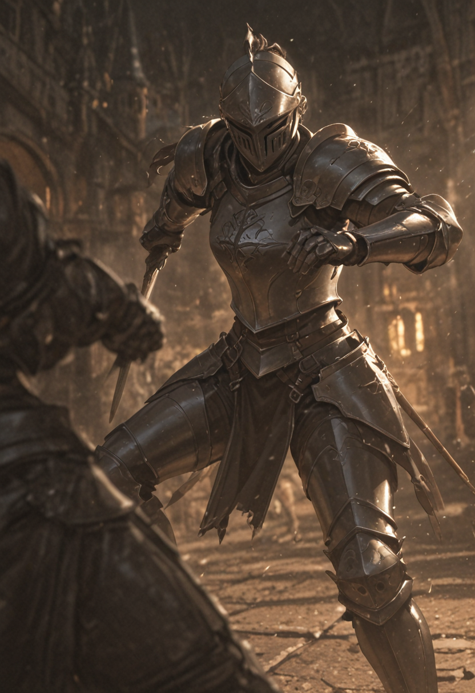
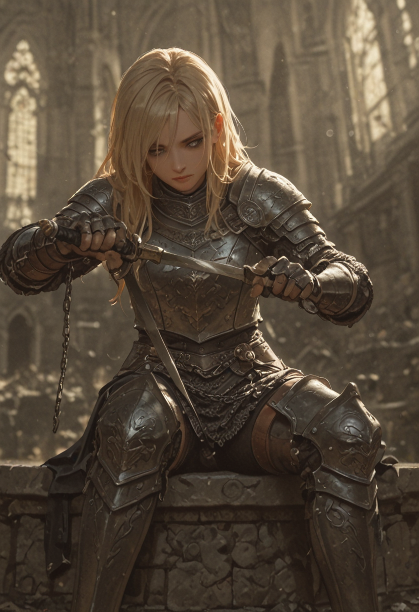
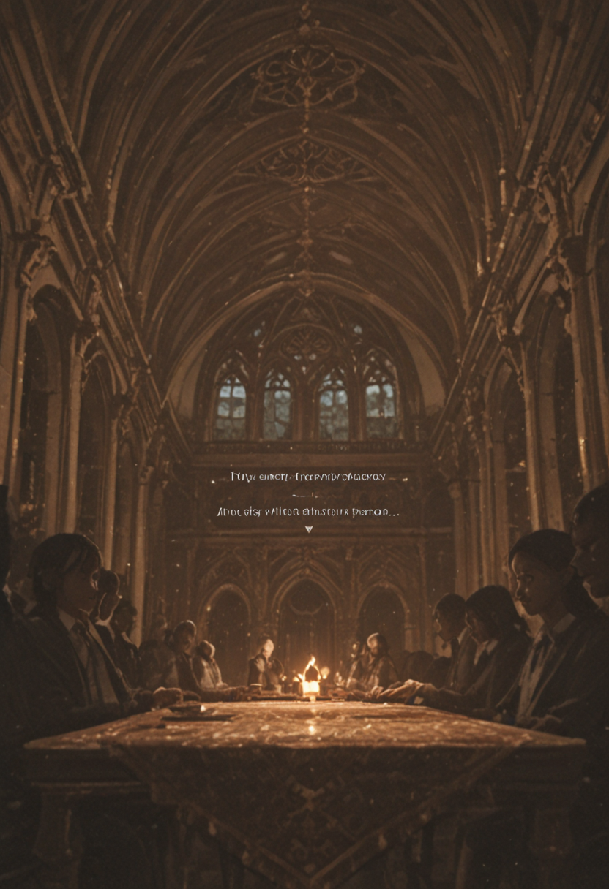
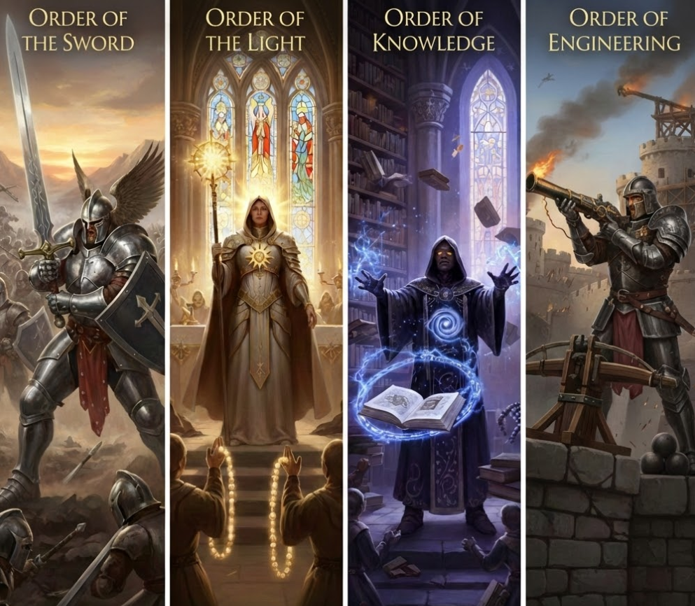
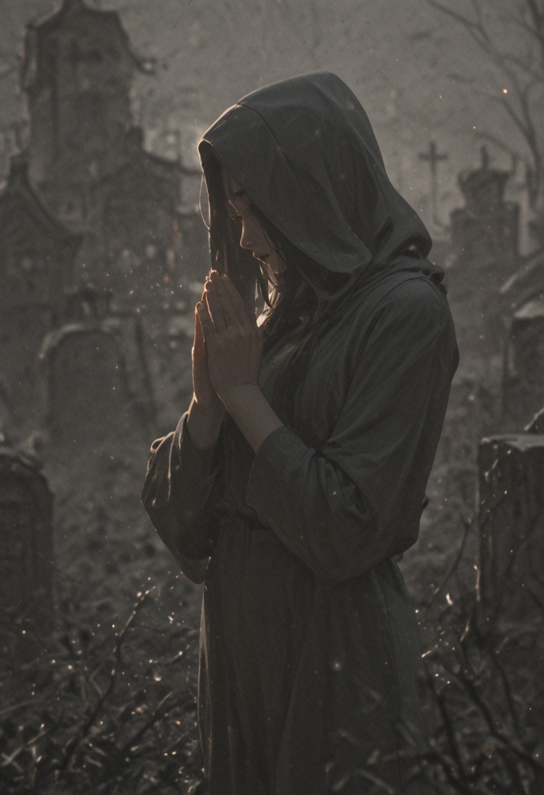
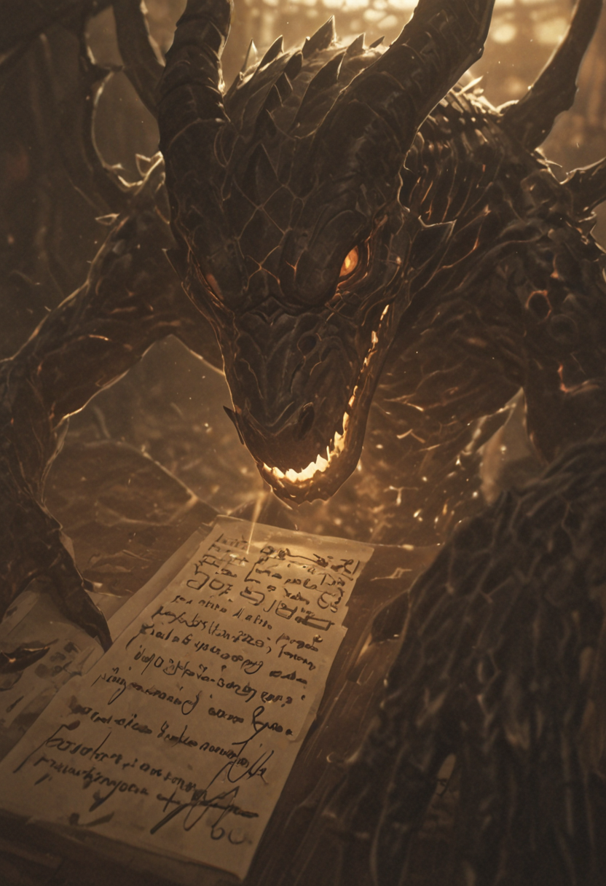

An in-depth look at the societal norms, governance, and philosophical burdens carried by the citizens of the Empire.

Live and Let Live
The Valkyrion Empire is over five hundred years old. While it is mainly a human-oriented empire, it does not shy away from other races; in fact, they are warmly welcomed as new "family members." The main creed of Valkyrion society is "live and let live," and for this reason the Empire strives to maintain good diplomatic relations with all other factions—unless they are clearly hostile, either toward Valkyrion itself or toward another faction without clear justification. In such cases, Valkyrion forces will often rush to aid the victims of aggression.
They value honor, justice, loyalty, and goodness. While other factions may see this as naïve, Valkyrion takes great pride in upholding these ideals in a world that often rewards only those who deceive or conquer others. However, these values are not followed to a fanatical extreme: when survival is at stake, they hold less weight. In a true do-or-die situation, even the most honorable knight will not hesitate to fight dirty in order to survive.

In Tenebris Veritas
For ordinary citizens, the main law enforced is simple: treat others fairly and do not cause unnecessary harm. Warriors of Valkyrion, however, follow an additional guiding principle passed down from the Founder: "in tenebris veritas," an ancient phrase meaning "from shadows comes truth." Difficulties and suffering are seen as obstacles to overcome—trials that strengthen those who endure them. The Founder also taught that there is no light without darkness, no hope without despair, and no strength without weakness, drawing parallels to a form of yin and yang. Unfortunately, ancient texts are unclear on the deeper meaning he truly intended.
Every child is required to attend school from an early age and remains in education until the age of eighteen. Schools focus on general knowledge, but place particular emphasis on the development of emotional intelligence, which is considered essential for living a balanced and fulfilling life. Upon reaching adulthood, citizens may choose to work—either privately or in government service—or join the warrior ranks, often beginning their journey as squires.

The Weight of Governance
At the pinnacle of Valkyrion society stands the Ruler: the Empress or Emperor, depending on the era. The Ruler is said to be bound to the Founder in some way, not always by blood, but by will, inheriting the mission of bringing peace and prosperity to the people. The Ruler governs the capital city, Padineon, directly, while appointing an "Overseer" for each other city. Overseers are not chosen for their wealth or combat prowess; instead, they are personally tested by the Ruler. The nature of this test remains a closely guarded secret.
Each Overseer forms a council to manage their city. While they are free to choose their own advisors, most councils include at least a military advisor, an economic advisor, and a "Voice of the People"—a citizen elected by the population to represent their concerns, requests, and proposals.
Although Overseers act as the Ruler’s right hand, there exists another class of officials known as "The Voice of the Empress/Emperor." These individuals answer only to the Ruler and are not bound by local laws. They are typically war heroes or people of exceptional knowledge, faith, or power. Each of them usually leads a small group, known as a "party," tasked with carrying out special missions.
The Martial Orders
The Valkyrion warrior ranks are divided into four major orders:
Order of the Sword – Fighters specialized in melee combat, serving as frontline soldiers.
Order of the Light – Disciples of holy arts who follow the teachings of their god.
Order of Knowledge – Masters of the arcane, primarily focused on the study and use of magic.
Order of Engineering – Experts in technology who develop advanced weapons to deal damage from afar.
Those who join a warrior order begin as basic apprentices. Advancement through the ranks depends on individual skill, experience, and proven worth. Each order offers different combat approaches, resulting in various specializations. Recruits choose a specialization early on, but may change it later in order to gain a deeper understanding of their order’s teachings. Rare individuals who master all specializations within an order are known as Champions—a title earned by very few, due to the immense effort and dedication required.


The Anti-Nihilist Burden
The faction is primarily Lawful Good in alignment and strives to behave in an honest and genuine way, unless survival is at stake—because being Good is not meant to be synonymous with being naïve or foolish (the Night of Tragedy is always remembered).
One of the core philosophies of this culture is that every living being is part of a greater family: all are brothers and sisters. As such, the faction is extremely welcoming toward other races and factions. This friendly attitude, however, is not naïve. Even within a family there can be bad apples, and sometimes—painful as it may be—it is necessary to step up and punish those "siblings" who actively seek to harm innocents. For this reason, the faction is very likely to intervene if another power starts a war or commits the slaughter of innocents.
From an early age, what is taught in schools is the importance of living a fulfilling life while avoiding harm to others. This principle represents the core teaching and core value of the culture. It reflects their anti-nihilist worldview: if we are all piles of dust destined to die, then why not try to make this mortal life a little more enjoyable for everyone, so that all may have a good time while it lasts?
Following this utilitarian logic, there is a strong respect for the future and for those who will come after. One common motto among soldiers is "For those who come after". This is not meant as a form of martyrdom, but rather as an expression of responsibility: they believe they are doing their part to forge a clearer path for future generations, trying to leave the world in a better state than they found it.
With such respect for the future comes an equally strong respect for the past. The dead are remembered with deep gratitude, as they are seen as the foundation upon which society stands. Once each year, the Ruler visits the capital’s graveyard to pray for the souls of the dead—both for those who wish to find peace in the afterlife, and for those who still possess the will to fight, inviting them to join their cause through the haunting power of the ghost-enhanced sword. Their names may be forgotten, but the value of their existence is forever carved into the hearts of the living.

Diplomacy and Gray Areas
Being Lawful Good allows the faction to easily cooperate with other Lawful or Good factions, while relationships with Evil or Chaotic ones are far more difficult. Chaotic Evil factions, in particular, are almost impossible to cooperate with—unless an even greater evil threatens all sides.
Ironically, there is a historical precedent for alliances even with Devils (Lawful Evil). While dangerous, Devils rarely act through open hostility or chaotic conquest. They tend to pursue stability for their own ends and share a deep respect for rules, contracts, and promises.
While these are the general cultural principles, each Ruler interprets them differently. Some believe violence should always be the last resort, while others argue that crushing an uprising early may ultimately save more lives in the long run.
The Will of the Founder prevents Rulers from becoming openly evil or selfish, but many gray areas and loopholes exist—and these have caused more than a few problems throughout history.